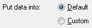

from sikuli import *
import logging
import mySettings
import os
tsimport = App(os.path.join(r"C:\tssmoketest", Settings.Version, "tsimport.exe"))
# - - - - - - - - - - - - - - - - - - - - - - - - - #
def import_client():
# - - - - - - - - - - - - - - - - - - - - - - - - - #
logging.debug(' ')
logging.debug('Import_Clients')
# start tsimport
logging.debug('- start TSImport')
tsimport.open()
wait(Pattern().similar(0.86), 160)
keyDown(Key.ALT)
keyDown(Key.SPACE)
type('x')
keyUp(Key.ALT)
keyUp(Key.SPACE)
logging.debug('- set up client template')
time.sleep(1)
type("f",KEY_ALT)
type("n")
time.sleep(1)
type("co")
type('n', KeyModifier.ALT)
time.sleep(1)
type("cl")
type('f', KeyModifier.ALT)
#choose source
wait()
time.sleep(1)
type("g",KEY_ALT)
time.sleep(1)
paste(os.path.join(r'C:\Sikuli Scripts vm x', '2015', 'Data', 'SmokeTestClientExport.csv'))
# choose fields
doubleClick()
doubleClick()
doubleClick()
doubleClick()
# city
type("c")
time.sleep(1)
type(Key.ENTER)
doubleClick()
doubleClick()
# move to address 1
type("a")
time.sleep(1)
doubleClick()
doubleClick()
# in reference to
type("i")
time.sleep(1)
type(Key.ENTER)
doubleClick()
# rate 01
doubleClick()
time.sleep(1)
# omit 1st record
click()
type(Key.TAB)
time.sleep(1)
type("2")
# import data
logging.debug('- import data')
click( )
wait(, 30)
click()
# verify data
wait(,FOREVER)
if exists(Pattern().similar(0.95)):
logging.debug('- import complete - no failed names')
else:
logging.debug('- import complete - some failed names')
# close tsimport
logging.debug('- close TSImport')
tsimport.close()
#import_clients()
)
wait(, 30)
click()
# verify data
wait(,FOREVER)
if exists(Pattern().similar(0.95)):
logging.debug('- import complete - no failed names')
else:
logging.debug('- import complete - some failed names')
# close tsimport
logging.debug('- close TSImport')
tsimport.close()
#import_clients()